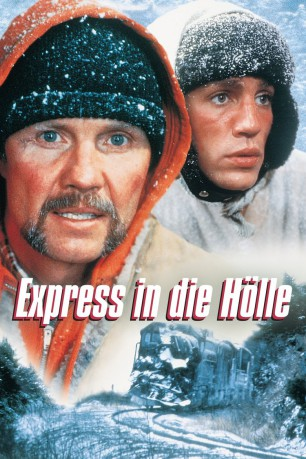
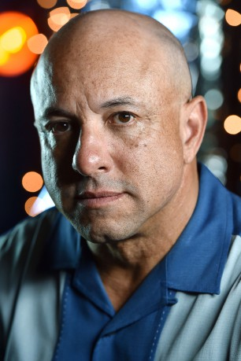
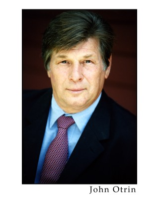
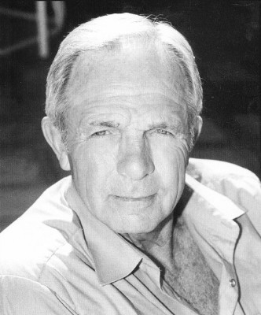
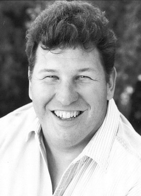
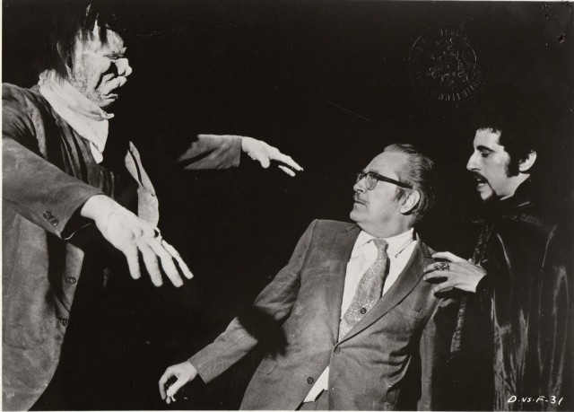
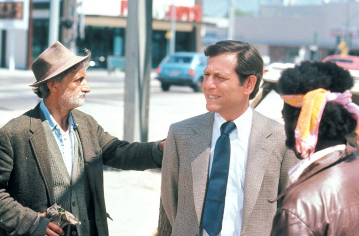

#1968 Express in die Hölle
Alternativ: Runaway Train
Auszeichnungen: für 3 Oscars nominiert 1 GoldenGlobes gewonnen
 
 IMDB-Wertung: 7.3 / 10
IMDB-Wertung: 7.3 / 10  Metascore: 0
Metascore: 0 
US-amerikanischer Thriller von Andrei Konchalovsky aus dem Jahre 1985. Zwei Häftlingen, Manny Manheim (Jon Voigt) und Buck (Eric Roberts), gelingt die Flucht aus einem Gefängnis in Alaska. Es gelingt ihnen sich in einem Zug zu verstecken und die Stadt zu verlassen. Nach der anfänglichen Freude entdecken die beiden bald, dass der Zug auffallend schnell ist und nicht mehr gestoppt werden kann.
Jahr: 1985
Dauer: 111 Minuten
FSK: 16
Land: USA Studio: Cannon Group, TheTonspuren: DD2.0 - ,
Untertitel:
Auflösung: 1080p (1920x1040) Größe: 9072 MB
Genre: Action, Thriller, Drama, Abenteuer
Regisseur: Andrey Konchalovskiy
Drehbuch: Djordje Milicevic, Paul Zindel, Edward Bunker, Akira Kurosawa, Ryûzô Kikushima
Soundtrack: Trevor Jones
Darsteller:
 Jon Voight als Oscar 'Manny' Manheim
Jon Voight als Oscar 'Manny' Manheim Eric Roberts als Buck McGeehy
Eric Roberts als Buck McGeehy Rebecca De Mornay als Sara
Rebecca De Mornay als Sara-  Kyle T. Heffner als Frank Barstow
 John P. Ryan als Warden Ranken
John P. Ryan als Warden Ranken- T.K. Carter als Dave Prince
 Kenneth McMillan als Eddie MacDonald
Kenneth McMillan als Eddie MacDonald Edward Bunker als Jonah
Edward Bunker als Jonah Hank Worden als Old Con
Hank Worden als Old Con-  John Otrin als Cat Con
- Don Pugsley als Guard
 Danny Trejo als Boxer
Danny Trejo als Boxer Tommy 'Tiny' Lister als Black Guard
Tommy 'Tiny' Lister als Black Guard-  Loren Janes als Engineer Eastbound 12
-  John-Clay Scott als Conductor Eastbound 12
 Kerry Shale als Dubbing
Kerry Shale als Dubbing Dick Durock als Fight Guard , uncredited
Dick Durock als Fight Guard , uncredited Dennis Franz als Cop , uncredited
Dennis Franz als Cop , uncredited John Richard Petersen als Camera Man , uncredited
John Richard Petersen als Camera Man , uncredited- Stacey Pickren als Ruby
- Walter Wyatt als Conlan
- Reid Cruickshanks als Al Turner
- Dan Wray als Fat Con
- Michael Lee Gogin als Short Con
-  John Bloom als Tall Con
- Norman Alexander Gibbs als Queen Con
- Dennis Ott als Guard
- John Fountain als Guard
- Wally Rose als Announcer
- Big Yank als Trainer
- Dana Belgarde als Prison Guard
- Diane Erickson als Sue Majors
- Larry John Meyers als Pulasky
- Don MacLaughlin als Foreman Cassidy
- Vladimir Bibic als Fireman Wright
- William Tregoe als Rogers
- Obie Weeks als Head Brakeman
- Robert M. Klempner als Cushman
-  Carmen Filpi als Signal Maintainer
- Phillip Earl als 1st Crewman
- Tom Keenan als 2nd Crewman
- Tony Epper als Hitman
- Jerry Brainum als Bodybuilder
- Duey Thomasick als Emergency Worker
- John K. Anderson als Inmate , uncredited
- Charlie Messenger als Yardworker , uncredited
- Benjamin Rivera als Prison Inmate , uncredited
- Marshal Silverman als Prisoner , uncredited
- Harris D. Smithe als Willard , uncredited
- David Stompro als Jonson , uncredited
Datei: X:\1985\Express in die Hölle (1985, FSK16, 1920x1040).mkv seit 11.09.2015
Festplatte: HD 1980-1986
 Es gibt insgesamt 43 Filme in der Gruppe '1985'
Es gibt insgesamt 43 Filme in der Gruppe '1985'